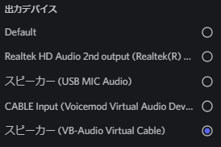

https://arutora.com/15923 を参考にして 「VB-CABLE」 をインストールしてください。
chromeの右上にある3点のアイコンから設定を開き、
[プライバシーとセキュリティ] -> [サイトの設定] -> [マイク] をクリックします。
[マイク] から既定のマイク入力を [CABLE Output (VB-AUDIO ~)] に変更します。
Windows [設定] -> [サウンドの設定] -> [サウンドの詳細設定] -> [録音] の [CABLE Output (VB-AUDIO ~)] を右クリックします。
[プロパティ] -> [聴く] -> [このデバイスを聞く] にチェックを付けます。
VC等できるアプリの出力を [VB-CABLE] に変更します。
このサイトのボタン [recording] をクリックします。